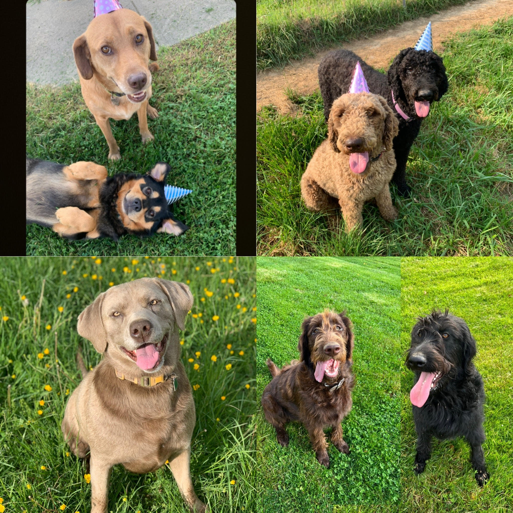

About Me
Hello!
My name is Katie, and I own seven dogs. I have two rescues, the first picture. Their names are Coco (brown) and Princess (black). These two love to chew on bones. To the right are my two poodles, Mia and Rena. Rena (black) had 12 puppies in August 2021 with our silver lab Bo, shown in the next row. Bo loves jumping in the pond. The next two dogs are Rena and Bo's 9 month old puppies, Oak (brown) and Bear (black). Mia also had 8 puppies on May 9, 2022. Having so many dogs does have its challenges, but I love each of my dogs so much.
